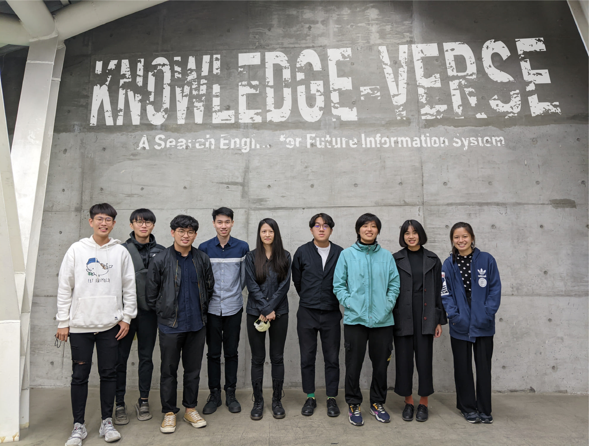
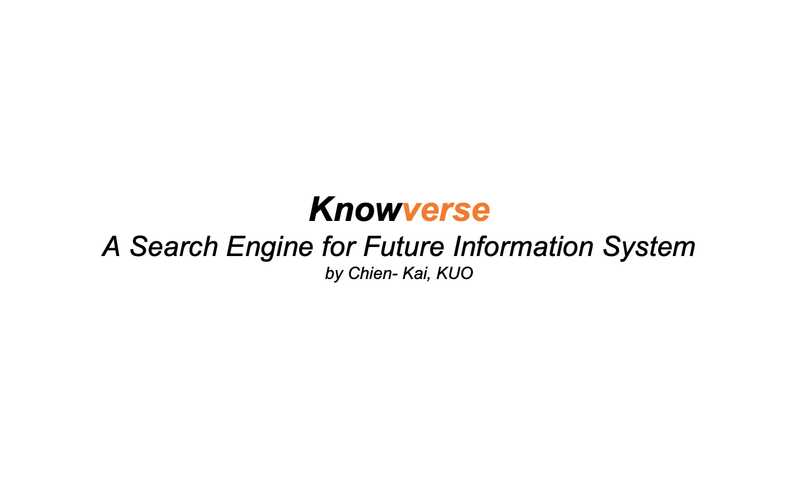
0. Cloud-based
Information
System
# Multimedia
# Open Source Database
# Communicative Media
# Decentralized System
Suppose that a cloud-based information system - "Knowledge Universe"
covering all information is established in the next 50 years.
Knowledge is considered an open source material in this platform,
and information can be distributed to various end-Users through the first-person
interactive experience universe as a media carrier.
In addition to using text, audio, images, videos, etc.,
users can actually immerse themselves in the subject matter and
directly access the information content through this unique medium.
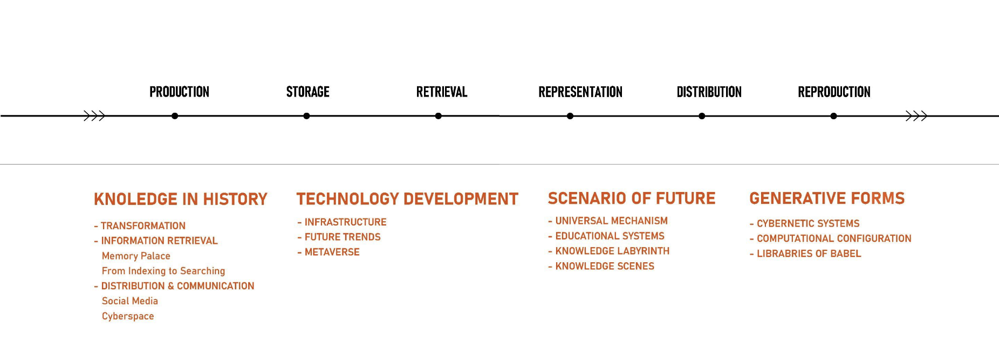
In the past, higher education was subject to centralized management,
which resulted in social reproduction, knowledge inequality and information gaps.
However, knowledge, as a public resource, should be accessible and available through
open source. By means of immersive experiences, individuals can have comprehensive learning
and perception of the subject matter through their physical senses.
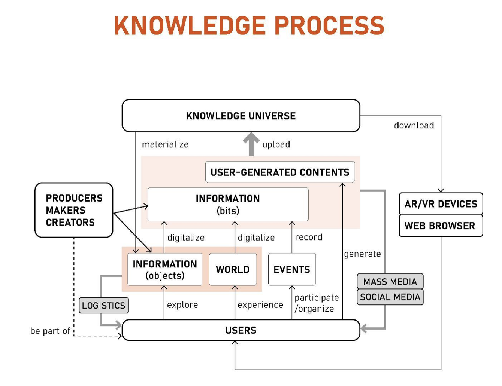
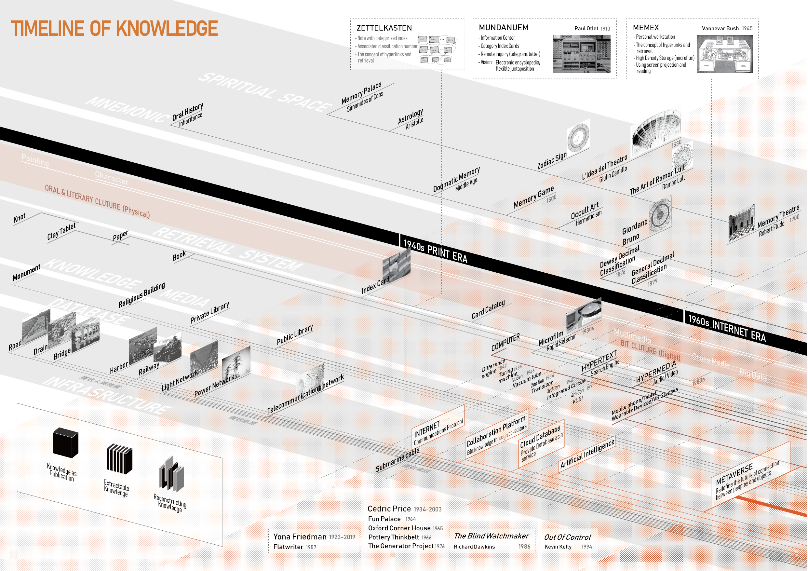
1. System Design
and Search
Mechanism
# Search Engine
# Data Materialization
# Digital Twin
# Blockchain
In the past, knowledge was managed centrally as a privileged monopoly of a few authorities.
Nevertheless, with the advent of Gutenberg's Press (1450) and the Internet Era (1995), information could be disseminated to end users, and the medium of transmission moved from printed paper to internet, where users could receive "Information Content" in the form of multimedia, such as text, audio, pictures and images.
Recently, with the maturity of Blockchain and Virtual Reality technologies, a universe of first-person immersive/ interactive experiences
has been conceived, and the era of decentralized Web 3.0 is approaching.
I supposed that in 50 years' time, a cloud-based information system will be established covering all information - the "Knowledge Universe", and knowledge, as open source data, will be searched, retrieved and presented in this universe.
The Timeline of Cyperspace
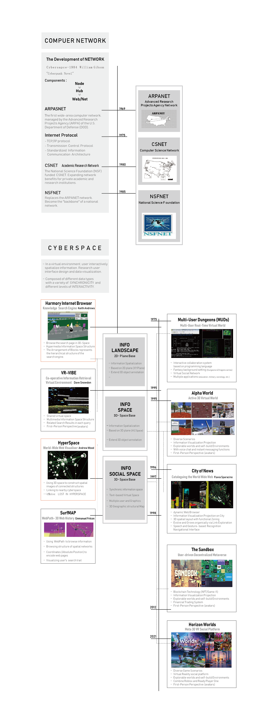
Knowledge Retrieval Architecture
- Underlying Technology: Data Retrieval, Information Materialization/Scenarioization
- Core Concept: Immersive Experience with Knowledge Content
- Search Engine: return Search Results
- Digital Materialization System: Immersive Experience
- Interaction Mechanism: Digital Twin, AR/VR/MR
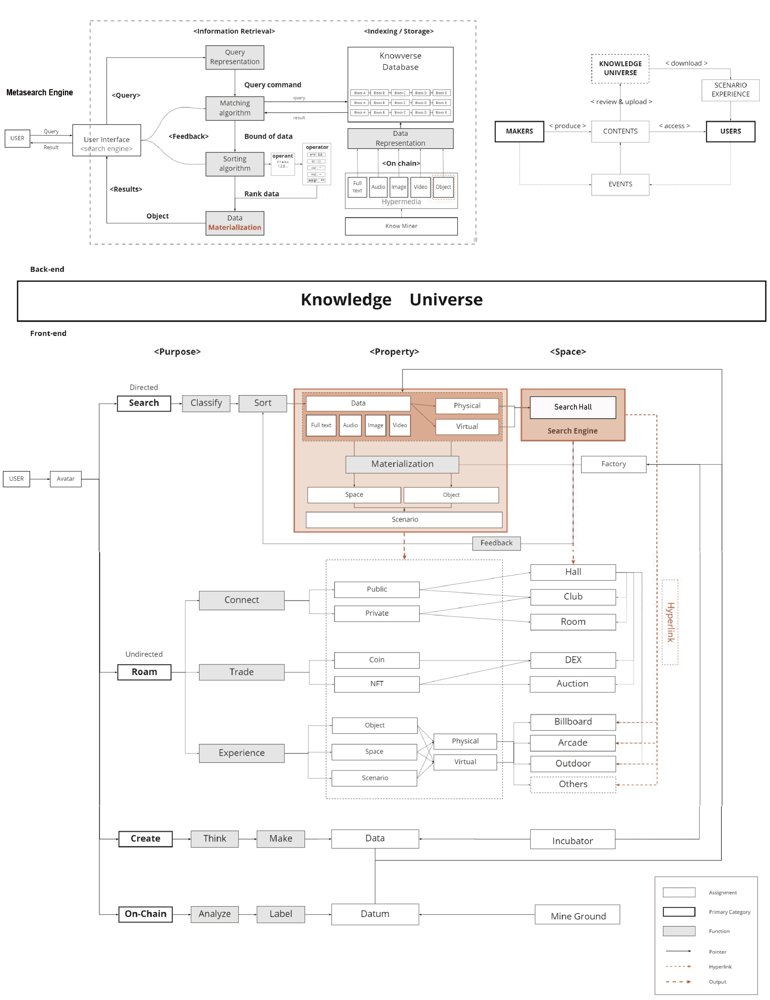
Knowledge Operating System
- Underlying Technology: Blockchain (decentralized database)
- Core Concept: Maintain Knowledge Equity, Narrow Information Gaps
- Information Storage and Retrieval System: Data Indexing and Classification
- Credentialing Mechanism: verify Data Integrity
- Application Mechanism: Communication Media and Spatial Diversity
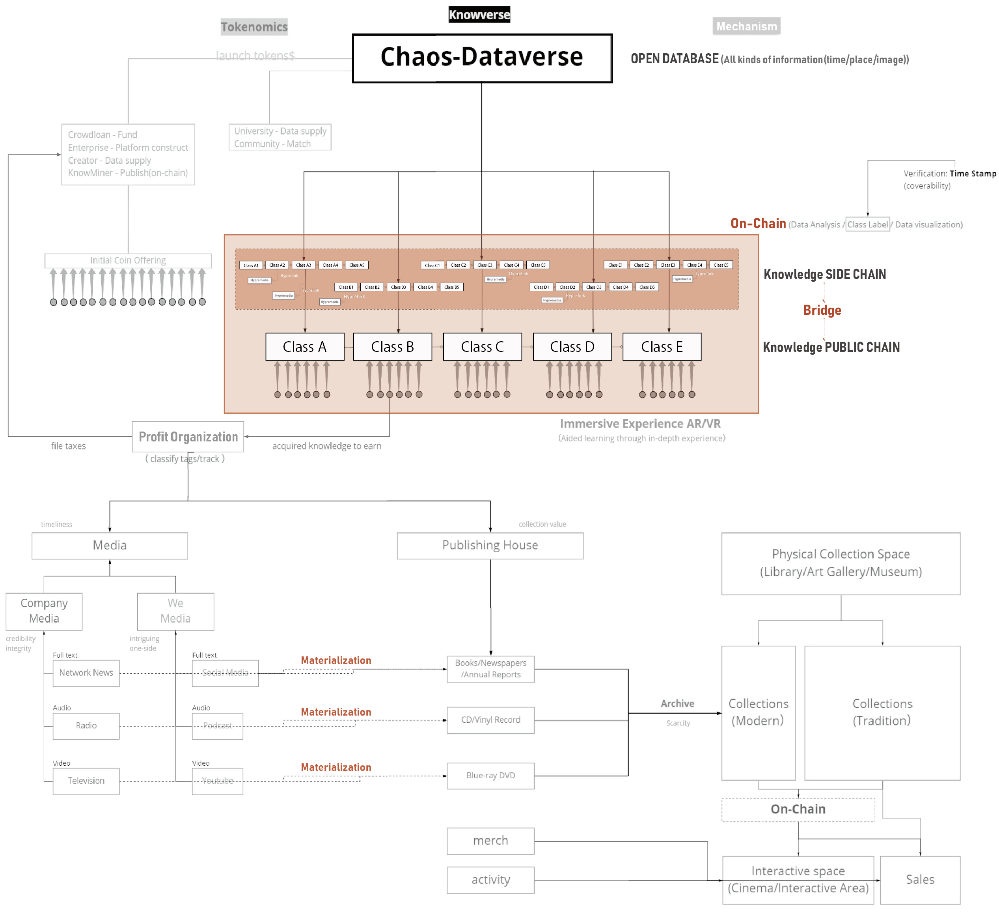
2. Search Engine
and Spatial
Experience
# AR/VR/MR
# Info Space
# Search Mechanism
# Experiencial Design
The bottom layer of this universe includes
a mirrored main universe and muilple information entity/scenario-based sub-universes.
Users access this realm via wearable devices or mobile devices,
and will be directed to the corresponding Server(default)
according to the login IP address.
This server consists of three parts:
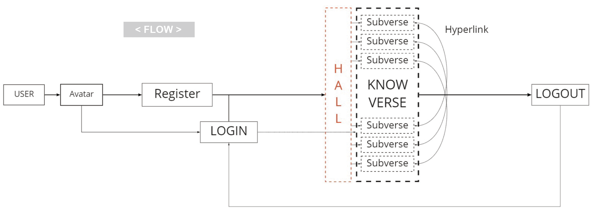
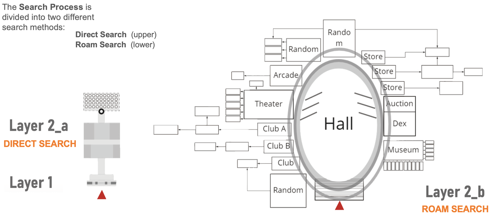
This server consists of four parts:
1. Search Gate - Start Page (Entrance)
When the user logs in, he/she will act as a network "Avatar",
and the landmark building will be represented corresponding to the local area (IP address) as an entrance guide and as an indicator object of different servers.
The user can choose to log in to the arbitrary server according to his/her preference.
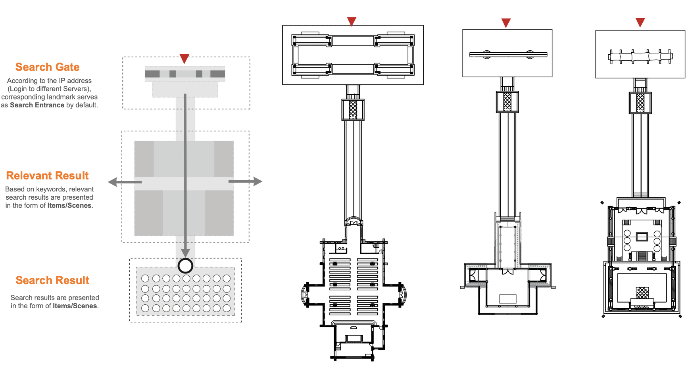
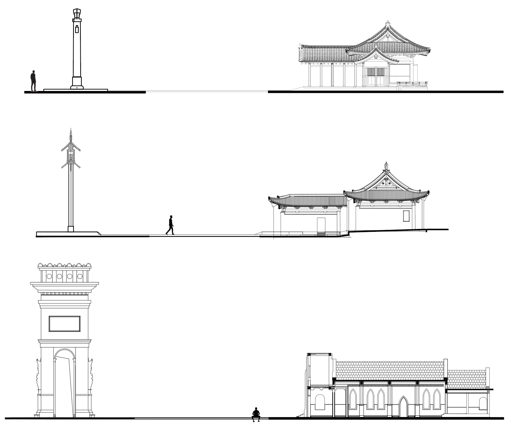
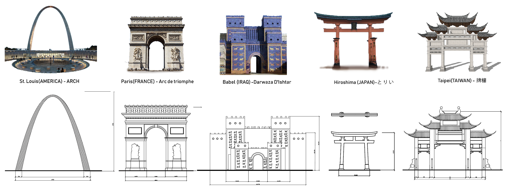
2. Homepage - Direct Search /Associative Search
(Customized Settings)
After "Avatar" passes through the Search Gate,
the user can directly access the upper level "Home", which is for personal use only,
and is also defaulted to the corresponding regional building
(can be altered according to preference).
There are three stages in this building:
The first stage is to select the Search Method,
the user can switch "Home" based on their needs or navigate to the lower "Search Hall".
The second stage is to enter the "Home", and the relevant keywords will be presented
in the form of physical objects/scenarios.
If interested, user can move to the other sections (two sides) to explore the search results.
The final stage is to get the search results, which will be presented in the form of physical objects/scenarios likewise.
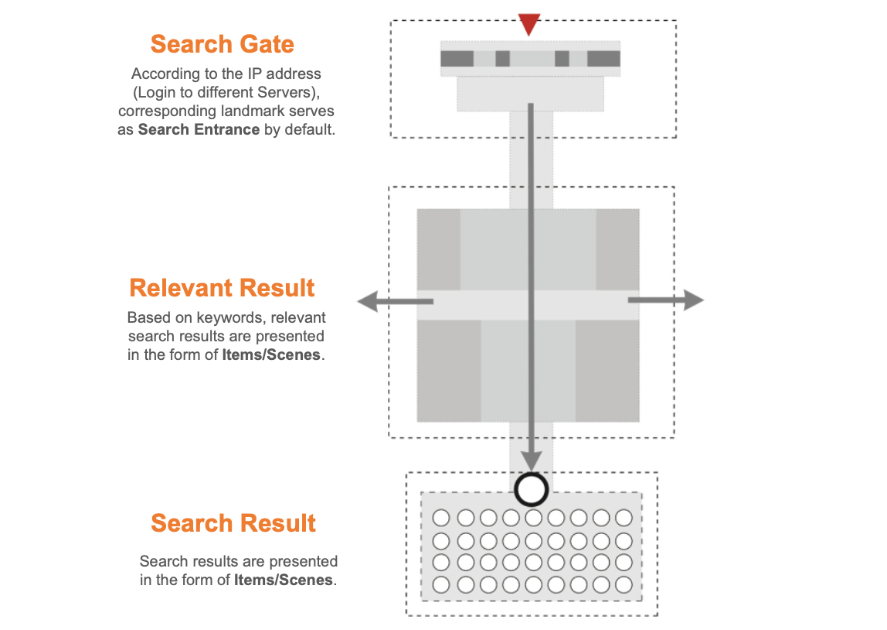
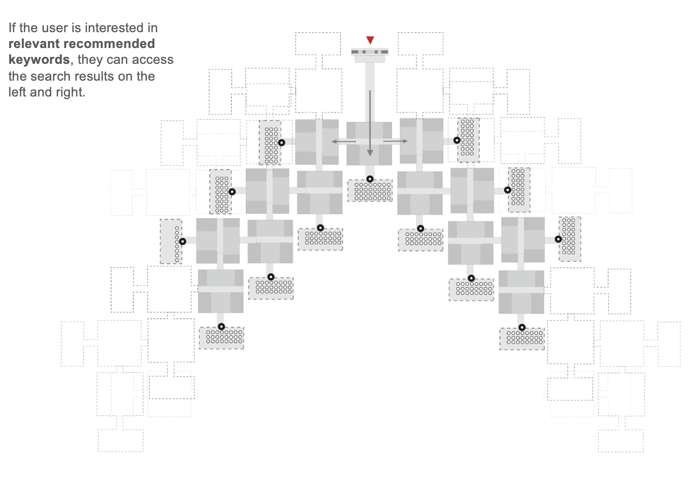
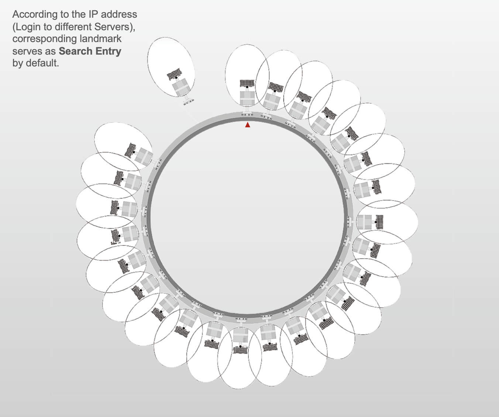
3. Search Hall - Roaming Search /Recommended Search
(Community Settings)
After "Avatar" passes through the Search Gate,
the user can enter the "Hall" area on the lower level.
This area is accessible to all users on the same server.
It is also default to the corresponding regional public sphere.
In this layer, each category of space acts as a "Subsearch Engine"
and can be hyperlinked to the corresponding search results via space
functional attributes, enabling shared user experience.
The content is determined according to spatial attributes and search trends.
In additon, random spaces will be generated in this layer based on regional differences.


4. Subsearch Engine
There are multiple Subsearch Engines attached to the "Search Hall"
on the lower floor, which are represented by various functional spaces
such as theaters, museums, libraries, clubs, etc.
Users can select the preferred space to obtain specific information hyperlinks
based on their preferences. The information provided is generated by
recommendation system algorithms.
According to spatial characteristics,
the algorithm can be divided into "Non-Personalized Recommendation" (libraries, museums, etc.)
and "Personalized Recommendation" (clubs, stores, etc.), depending on the users' expectations.
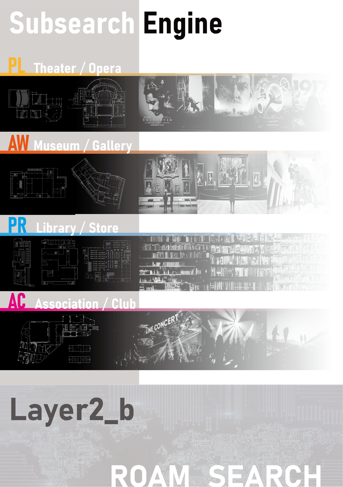

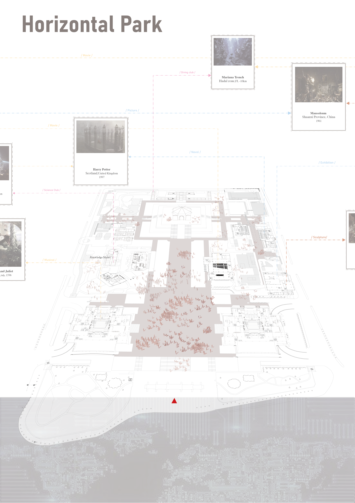
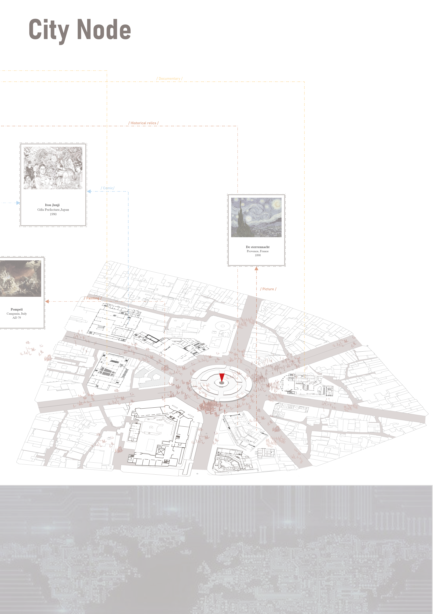
An architect and computer engineer dedicated to crafting innovative
Human-Computer Interfaces that integrate the convergence of the digital
and physical realms.

Leave a comment